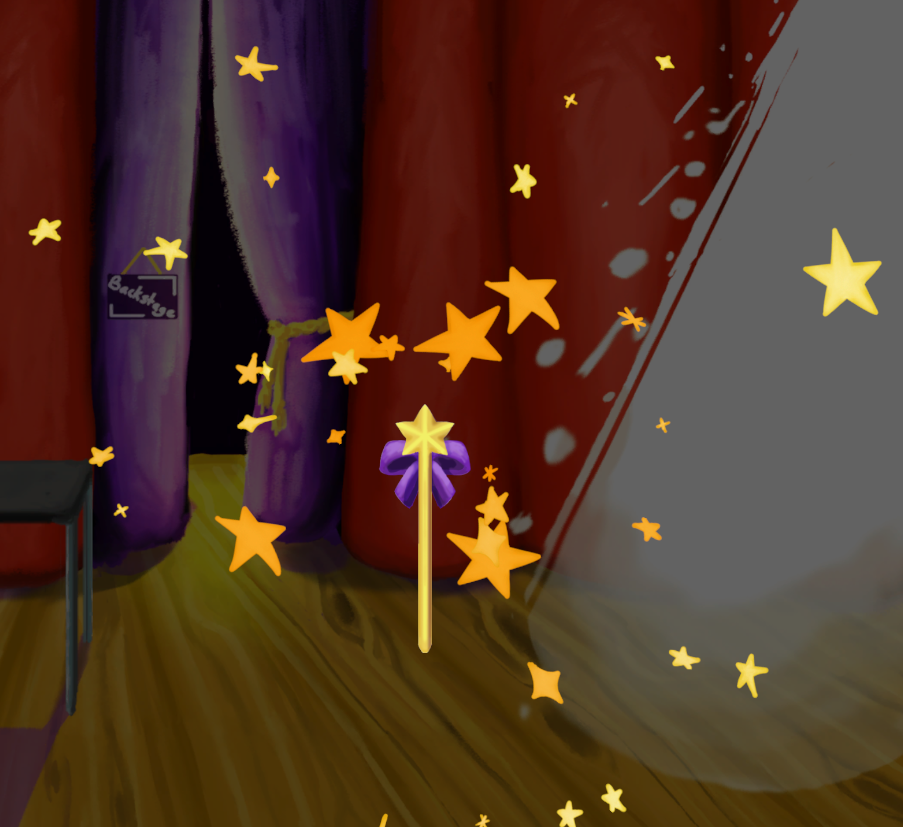
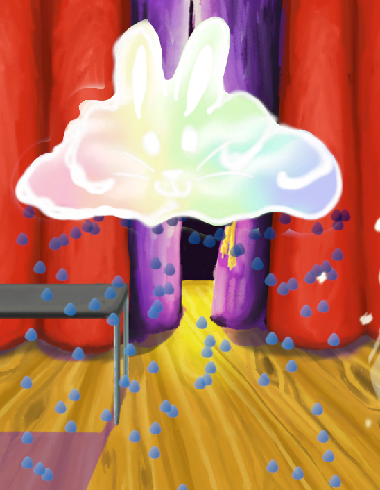
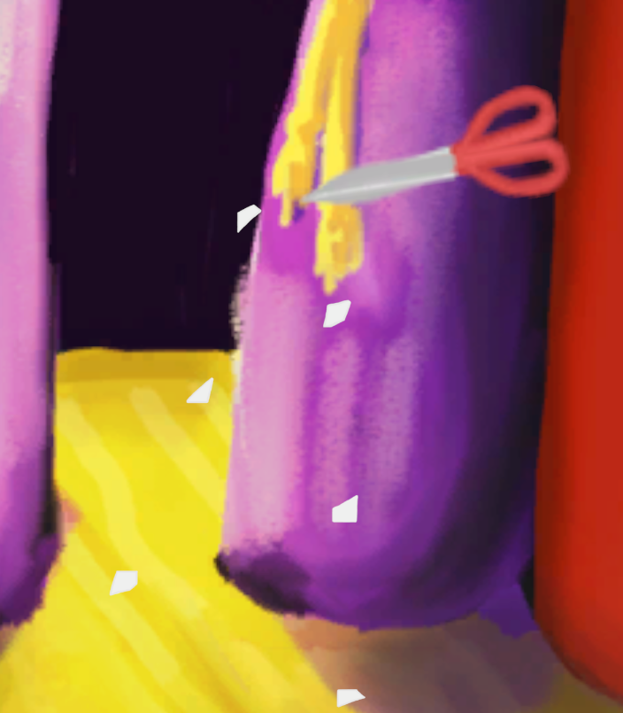
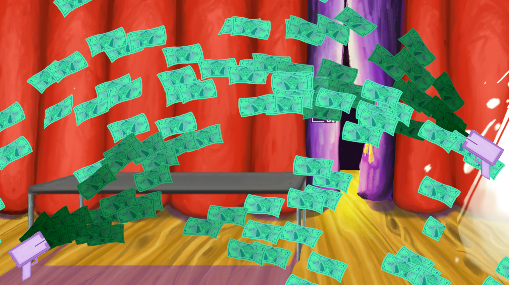

Magician Match is an unreleased educational memory and pattern following game developed by Simcoach Games. A special thank you to the studio, as Simcoach Games has allowed me to share assets and visuals I created for their properties during my employment at the studio for portfolio purposes.
In this game, players take on the role of a magician's apprentice, Arel, who helps the magician "Magic Moon" perform magic tricks by collecting items as requested and setting them in the proper order. The game features vibrant 2D art, engaging "magic trick" animations, and special effects to create an joyful and motivating experience. I was responsible for creating all placeholder and finalized art assets, rigging and animating characters, and implementing particle effects.
This breadth in skill and experience enables me to understand the needs of the artists I work with, and better aid in their issues.
Below are some examples of the work I created for Magician Match.
These 2D particle emitters needed to be drop-and-play, allowing for easy integration into various scenes and interactions within the game, often via linking to another art asset. Once I made one, I was able to reuse with slight modifications to speed up VFX development. I particularly enjoyed utilizing randomized sprite generation via spritesheets for the star and paper emitters.



